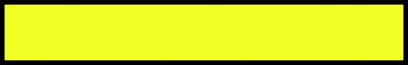

SIBERIAN HUSKY BREED
The Sibeiain husky is a beautiful dog breed with a thick coat that comes in many differant colors and
striking facial features. Siberian huskies are loving, gentle, playful, happy-go-lucky dogs that are fond of their families. Huskies are keen, social, relaxed, and rather high-energy .
The Siberian husky has captured the imagination of the masses, as well as artist, writers , and film directors, with their eye-caching looks and awe-inspiring talents. This medium-sized working dog possesses, power and athleticism.
striking facial features. Siberian huskies are loving, gentle, playful, happy-go-lucky dogs that are fond of their families. Huskies are keen, social, relaxed, and rather high-energy .
The Siberian husky has captured the imagination of the masses, as well as artist, writers , and film directors, with their eye-caching looks and awe-inspiring talents. This medium-sized working dog possesses, power and athleticism.